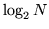

This program will construct a HTK format VQ table consisting of one or more codebooks, each corresponding to an independent data stream. A codebook is a collection of indexed reference vectors that are intended to represent the structure of the training data. Ideally, every compact cluster of points in the training data is represented by one reference vector. VQ tables are used directly when building systems based on Discrete Probability HMMs. In this case, the continuous-valued speech vectors in each stream are replaced by the index of the closest reference vector in each corresponding codebook. Codebooks can also be used to attach VQ indices to continuous observations. A typical use of this is to preselect Gaussians in probability computations. More information on the use of VQ tables is given in section 5.14.
Codebook construction consists of finding clusters in the training data, assigning a unique reference vector (the cluster centroid) to each, and storing the resultant reference vectors and associated codebook data in a VQ table. HQUANT uses a top-down clustering process whereby clusters are iteratively split until the desired number of clusters are found. The optimal codebook size (number of reference vectors) depends on the structure and amount of the training data, but a value of 256 is commonly used.
HQUANT can construct both linear (i.e. flat) and tree-structured
(i.e. binary) codebooks. Linear codebooks can have lower quantisation
errors but tree-structured codebooks have  access times
compared to  for the linear case. The distance metric can either be
Euclidean, diagonal covariance Mahalanobis or full covariance
Mahalanobis.
for the linear case. The distance metric can either be
Euclidean, diagonal covariance Mahalanobis or full covariance
Mahalanobis.